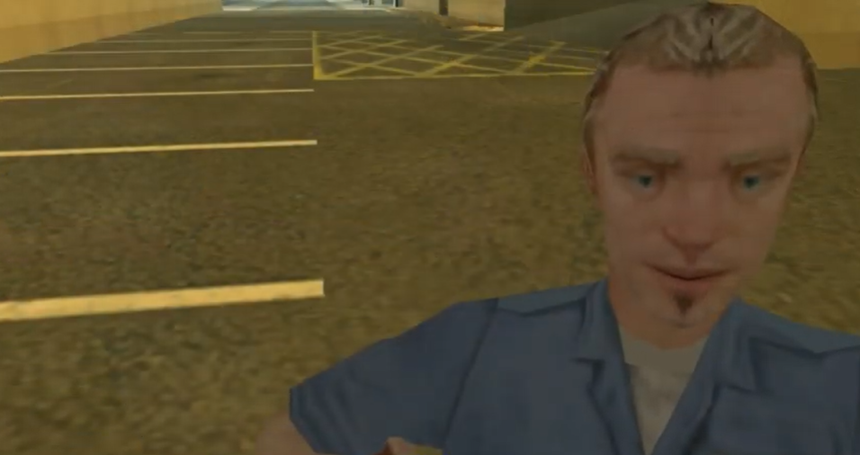

Mercenários da MIB
Wesker
Ele é o líder dos Mercenários da MIB e tem poderes misteriosos que ninguém entende. Seu objetivo é tornar os Mercenários da MIB o grupo mais influente dentro da MIB.
Dublador: Jean

Three
Um inteligente cientista com poderes de fogo. Ele é fascinado por fazer experiências científicas e queimar coisas.
Dublador: Renan Almeida
Jethro (Santos)
Ele é o mecânico da agência e também um membro dos Mercenários. É a pessoa mais engraçada e pacífica entre todos os contratados da MIB. Ninguém sabe quais são seus poderes.
Dublador: Lucas KZ
Zero
Ele é um jovem muito interessado por tecnologia e programação. Dizem que ele está construindo uma arma que fará ficar mais fácil a caça aos monstros.
Dublador: Rafael